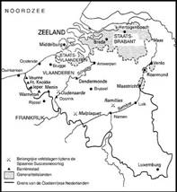
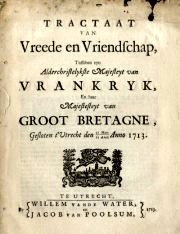
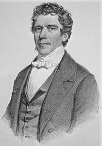
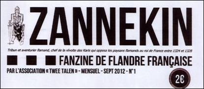
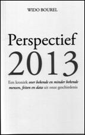
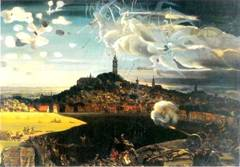

> nieuwsbrief
> 2e trimester
2013
Hernieuwen
ledenbijdrage voor 2013
Uw
secretaris
is een tevreden man: de hernieuwing van de bijdragen verliep uitermate
vlot.
Mocht u bij deze Nieuwsbrief
andermaal een betaalformulier aantreffen, dan wil dit u er aan
herinneren dat u
tot degenen behoort die totnogtoe nalieten gevolg te geven aan ons
verzoek. Ter
herinnering: de ledenbijdrage voor 2013 beloopt voor het in mei te
verschijnen
nieuwe Jaarboek De Nederlanden extra
muros en voor de driemaandelijkse Nieuwsbrief
Zannekin 29
. Vanaf 35 wordt u met dank als steunend lid geboekt.
We sluiten andermaal aan bij de reis in het kader van de Frans-Vlaamse dagen van Nieuwpoort die mede in het teken staat van de herdenking van de Vrede van Utrecht 1713.
Achtergrond: Er werd in 1712 op hoog politiek
niveau
gedurende ruim een jaar onderhandeld om uiteindelijk tot de Vrede van
Utrecht
te komen, die getekend werd op dinsdag 11 april 1713, uitgerekend op de
kop
veertig jaar na de Slag aan de Peenebeek, in Frans-Vlaanderen.
De zuidelijke grenzen van
de Verenigde Provinciën mochten wel garnizoenen opstellen in versterkte
steden
van de Zuidelijke Nederlanden als bescherming tegen de Fransen, die
delen van
de in 1677 geannexeerde gebieden terug aan de Zuidelijke Nederlanden
dienden af
te staan. Deze steden, later ook deels Barrièresteden geheten, waren
o.a.
Veurne, Ieper, Menen, Kortrijk, Oudenaarde, Gent, Doornik, Bergen,
Charleroi,
Namen. De bepalingen en voorwaarden werden gegoten in het
Barrièretraktaat van
15 november 1715. De Zuidelijke Nederlanden werden mi-litair een
condominium
tussen de Oostenrijkse keizer en de Republiek.
De Zuidelijke Nederlanden
werden sindsdien de Oostenrijkse Nederlanden tot 1794.
 De Barrièresteden
In de buurt van Nieuwpoort en van de IJzer lagen enkele barrièresteden, maar de IJzer verloor uiteindelijk zijn grensfunctie.
Programma
van de dag:
08.00 uur: Vertrek Veurne-station voor Zannekin-leden
08.30 uur: Station Veurne. Busrit langs Veurne, Ploegsteert met de wijk Clé de Hollande, Waasten, Komen, Zuid-Wervik, Menen met vestingen
10.30 uur: Koffiepauze. Busrit via Halewijn en Linzele (Linselles) naar Rijsel.
12.45 uur: RIJSEL. Vlaams middagmaal - Bezoek te voet aan het Citadel-park en omgeving + rondrit. Mogelijkheid tot bezoek aan de maquettes van versterkte grenssteden in het Museum voor Schone Kunsten (+ 5,00 uro toegang) of vrije tijd.
17.00 uur: Vijfuurtje. Terugrit naar Veurne en Nieuwpoort via Fort-Knokke (onder voorbehoud).
19.30 uur: aankomst in Veurne-station.
Prijs: busrit, gids, morgenkoffie, middagmaal, vijfuurtje: 60,00 uro.
Aanmelden tot
uiterlijk 12 april via
e-post maurits.cailliau@skynet.be
(of schriftelijk via het secretariaat: Paddevijverstraat 2, B.8900
Ieper).
Uw inschrijving wordt eerst definitief na
boeking van uw deelnemers-bijdrage van 60,00
uro op een van onze rekeningen als vermeld op p. 2.
Studiedag te Ieper rond de Vrede van Utrecht - 1713
Op vrijdag 29 november 2013 organiseert het Stadsarchief Ieper (in samenwerking met het Stadsarchief Duinker-ke en het Instituut voor Rechtsgeschiedenis van de Universiteit Gent) een internationale studiedag naar aanleiding van de driehonderste verjaardag van de Vrede van Utrecht en het vastleggen van de Frans-Belgische grens.
·
Prof.
dr. Lucien Bély (Université Paris-Sorbonne), La
frontière au temps de
·
Dr.
Guy Thewes (Musée d'Histoire de
·
Dr.
Michiel Nuyttens (Algemeen Rijksarchief en Rijksarchief in de
Provinciën), La
frontière franco-belge à travers les
archives des États de Flandre.
·
Prof.
dr. Randall Lesaffer (Tilburg University), Afstand
van territo-rium en
soevereiniteitsoverdracht in vroeg-moderne vredesverdragen: de
Frans-Belgische
grens.
·
Drs.
·
Dr. Klaas van Gelder (Universiteit
Gent), Keizer
Karel VI en de Oostenrijkse machtsovername in de Zuidelijke
Nederlanden: tussen
vermeende continuïteit en de normalisering van de oorlogstoestand.
·
Drs.
Fanny Souilliart (Université Lille-II), Le
parlement de Flandre, parlement de Louis XIV.
·
Dr.
Dr. Guido Braun (Rheinische Friedrich-Wilhelms-Universität Bonn), L'Allemagne
et
www.facebook.com/stadsarchief.ieper (evenementen: De Frans-Belgische Grens in het Ancien Régime).
De
Vereniging/Stichting Zannekin
Niklaas Zannekin en het
Zannekin-symbool
Luc Carton
Wim van Heugten
Las Guerras
de los Paises Bajos (1568-1648), ook wel Las Guerras de
los Flandes genoemd
Willy Alenus
De Kerkmeesters
van de
Sint-Aldegondekerk in Sint-Omaars schrijven in 1610 een Nederlandse
maanbrief
aan de Schepenen van de stad Gent
Cyriel
Moeyaert
Amalia
van Solms-Braunfels (1602-1675)
Renaat van Heusden
Vrede
van Utrecht (1713): het einde van een bijna vergeten wereldoorlog
Ruud
Bruyns
De laatste Nederlandstalige school in
Pruisen
Hendrik Steeger
Vastlegging
van de grens tussen Drenthe/Groningen en het Eemsland krachtens het
Meppener
traktaat
Marten Heida
De
pseudobasiliek: een voornamelijk Middelnederlandse bijdrage aan de
laatmiddeleeuwse kerkbouw in noordwest Europa
Zeno Kolks
1963-2013:
Vijftig jaar Vlaams-Waalse Taalgrens doorheen Midden-België en
Germaans-Romaanse Taalgrens in Oost-België
Leo Camerlynck
Over
Pro
Westlandia en Zannekin
Cyriel
Rousseeu
Kroniek
en boekbesprekingen
Charles Rogier (1800-1885) - de verzoenende scheurmaker
Charles Latour Rogier is in de geschiedenis der Lage Landen onsterfelijk geworden door zijn mars van zijn 3001 van Luik naar Brussel in 1830, waarmee hij de Belgische opstand een belangrijke impuls gaf. Maar naast de mythe staat ook de mens Charles Rogier die in zijn leven meer heeft betekend voor Vlaanderen en de Nederlanden dan men op het eerste oog zou vermoeden.
Fransman, Waal,
Nederlander of
Belg?

Rogier werd in 1800
geboren in het
Picardische Saint-Quentin in het toenmalige Frankrijk, maar wat ooit
een
grensstad was aan de rand van de XVII Provinciën. Saint-Quentin is ook
gelegen
in de buurt van Kamerijk, waar zijn grootvader zich in de 18e eeuw
vestigde als
platenhandelaar, en nabij de oorsprong van de Schelde.
In de historiografie wordt er doorgaans gegoocheld met de identiteit van Rogier. Zo variëren de predikaten van Waal tot Luikenaar van Franse afkomst, wat geen van allen recht doet aan de achtergrond van een Picardiër die in Luik is opgegroeid. Zijn familie komt uit een streek die zeker tot het einde van 18e eeuw zeer sterk gericht was op de welvarende Zuidelijke Nederlanden en zich bewust was van het feit dat zij waren geannexeerd door de Fransen. In de laatste jaren is er veel geschreven over het Zuid-Nederlandse bewustzijn in de door Frankrijk aangehechte gebieden, waarbij met name de jonge historicus dr. Sebastien Dubois uit Luik baanbrekend werk heeft verricht.2
Door de snelle opvolging van machthebbers aan het begin van de 19e werd Rogier in 1815 Nederlander door het uitroepen van het Verenigd Koninkrijk der Nederlanden onder Koning Willem I als gevolg van het Weens Congres. Charles Rogier ging na het examen aan het Luiks lyceum in 1817 rechten studeren aan door Koning Willem I gestichte Uni-versiteit van Luik, alwaar hij zijn latere vrienden ontmoette, de Waal Joseph Lebeau uit Hoei en de Vlaming Paul Devaux uit Brugge. Met deze vrienden stichtte hij in 1824 de liberale krant Mathieu Laensberg, dat later werd omgedoopt in Le Politique. De krant speelde samen met Le Courrier des Pays Bas een rol in de liberale oppositie tegen Koning Willem I.
Zijn actieve rol in de oppositie verklaart zijn betrokkenheid bij de Belgische opstand in 1830. Zoals hierboven vermeld was de aankomst van zijn Luikse vrijwilligers in Brussel een belangrijke impuls voor de gewapende opstand. Hij was ook de initiatiefnemer van het voorstel om door een stemming in het Nationaal Congres de Belgische onafhankelijkheid uit te roepen in 1831. Zodoende staat hij aan de grondslag van de scheuring van de Nederlanden, waarmee een gouden kans ver-loren ging, hoewel we dienen te beseffen dat de Belgische onafhankelijkheid één optie onder velen was, waaronder de onverkieslijke aansluiting bij Frankrijk of de opdeling zoals op dat moment door de grootmachten werd besproken.
Belgisch Staatsman
met de blik
naar voren
Na het uitroepen van de
Belgische
onafhankelijkheid begint de politieke loopbaan van Rogier waarbij hij
veelvuldig optreedt als minister van binnenlandse zaken. Zijn eerste
wapenfeit
was de aanleg van de eerste spoorlijn op het Europese continent tussen
Brussel
en Mechelen in
Voor de relatie tussen België en Nederland was het kabinet Rogier III (1857-1862) zeer belangrijk. In 1860 hadden de Belgische Koning Leopold I en de Nederlandse Koning Willem III elkaar ontmoet te Wiesbaden in Duitsland, waardoor er een dooi kwam in de ijzige Nederlands-Belgische betrekkingen sinds de Belgische onafhankelijkheid.
Tot eenieders verbazing was minister-president Charles Rogier ook aanwezig op dit congres. De aanwezigheid van scheurmaker Rogier werd als verheugend en ongemakkelijk tegelijk ervaren, zoals door de Amsterdamse Rooms-Katholieke letterkundige Alberdingk Thijm: Aan den ene kant is het gelukkig, dat de vernunftige politieke toeleg van de Heer Rogier aan dit Congres een gewicht heeft verleend, dat het, naar aard en aanleg, volkomen miste...5 Toch was Rogiers toenadering tot Nederland oprecht wat ook bleek uit zijn besluit in 1860 om de meeste anti-Orangistische en anti-Hollandse teksten te schrappen uit de Brabançonne. Bovendien voerde hij destijds een anti-Franse onafhankelijkheidspolitiek en werden er onder zijn bewind fortificaties aangelegd tegen de Franse expansiedrift van Keizer Napoleon III.
Besluit
Rogier was niet zomaar een Waal, maar een Picardiër die ondanks zijn opvoeding in de instituties van het Franse Keizerrijk van Napoleon trouw bleef aan de Zuidelijke Nederlanden en nooit heeft gestreefd naar een aansluiting van zijn vaderland met Frankrijk. Dat hij een grote rol heeft gespeeld in de Belgische opstand heeft veel te maken met zijn liberale opvattingen en waarschijnlijk niet zoveel met aan pertinent anti-Nederlandse houding.
Later in zijn actieve politieke loopbaan stuurt hij juist aan op een verzoening en gaat hij daarvoor zelfs naar een congres in Nederland om zijn gevoelens publiekelijk kenbaar te maken, waarmee hij zijn gewicht in de schaal gooide voor een nauwere band tussen Nederland en België. Of hij luidens zijn omschrijving op Wikipedia werkelijk gestreefd heeft naar een nieuwe vorming van het Verenigd Koninkrijk der Nederlanden kan ik niet staven aan historische bronnen6, maar we mogen het streven van toenadering tussen Nederland en België omstreeks 1860 zeker niet louter zoeken onder de romantische letterkundigen.
Noten
1
2 S. Dubois, Le Nord de la France, Sud de la Belgique: unité géographique et rêves de réunification des Pays-Bas, des guerres de Louis XIV à la Restauration in: Revue du Nord 87 (2005) pp. 351-365. Voor de Nederlandstalige versie van deze studie, zie: Sébastien Dubois, Noord-Frankrijk, Zuid-België: een geografisch geheel en de veroveringsdroom bij de oorlogen van Lodewijk XIV tot aan de Restauratie, in: Jaarboek de Nederlanden extra muros 31, 2009, pp. 49-69.
3
5 J.A. Alberdingk Thijm, De Vlaamsch-Hollandsche Beweging van
6 http://nl.wikipedia.org/wiki/Charles_Rogier.

En nog een recente
naamgenoot
gehuisvest in
Frans-Vlaanderen. Hoofding van het eerste nummer van het 4 paginas in
A4-formaat tellende nieuwe tijdschrift woorover meer op www.tweetalen.org
Onder deze titel stelde de auteur een kroniek samen over bekende en minder bekende mensen, feiten en data uit onze Nederlandse geschiedenis, de gebieden extra muros inbegrepen.
 Toekomst heeft afkomst, meent hij, de filosoof Hans-Georg Gadamer beamend. Zijn bedoeling is het zijn lezers de sprong in de toekomst makkelijker te maken door middel van een terugblik op de twaalf voorbije eeuwen. Die tijdspanne ligt verspreid tussen 813 en 2003 en herinnert aan momenten uit onze geschiedenis van jaren eindigend op een 3 (en een enkele keer op een 8, hetzij 5 jaar na datum).
Zijn stil staan bij de geannoteerde persoonlijkheden en data maakt ook de lezer even stil. Want het zijn inderdaad niet alleen maar verjaardagen, waarop bazuingeschal hoort te weerklinken. Vaak zijn het bescheiden, maar ten onrechte meestal vergeten voorvallen, die mede door de afstand in de tijd, langs deze weg weer hun volle betekenis en relevantie herwinnen.
Mocht de auteur er in slagen dit concept een decennium lang vol te houden, dan zou die inspanning resulteren in een waar compendium van om en nabij de 450 paginas, die voorwaar een waarachtig canon van ons Nederlands verleden zou vertegenwoordigen.
Dit opvallende
hebbeding 38
paginas met 18 illustraties, formaat 20 x 12,4 - krijgt u toegestuurd
mits
overboeking van 16,50 (verzending inbegrepen) op rekening IBAN BE38
8440 4509
0172 - BIC RABOBE22 van
Zie ook: www.widopedia.eu
De Silverijser - Geschiedenis van Herk-de-Stad (deel III) 1
Willy Alenus,
Oostende
Op het
rijksarchief in Hasselt wordt het testament bewaard van 1702 van de
echtgenoten
Petrus Hermans-Maria de
Russon. Daar het een
schoon voorbeeld
is van de wijze, waarop in die tijd (in het V.K. kwam Queen Anne op de
troon),
een testament werd opgesteld, hebben we gemeend dat de lezers er belang
zullen
in stellen. De oude Neder-duitse tekst is echter op enkele plaatsen
moeilijk te
begrijpen. Daarom hebben we hem omgezet in hedendaags Nederlands. We
hebben
nochtans de oude zinsbouw zoveel mogelijk bewaard.
In de
naam van Ons Heer, Amen. Bij het tegenwoordig onderzoek van een
testament, weze
aan ieder kond en kenbaar gemaakt, dat in het jaar van Ons Heer
Jesus-Kristus,
als men schreef zeventienhonderd en twee, voor mij openbare notaris,
gevestigd
in de stad Herk, in aanwezigheid van de getuigen, hierna te noemen,
zijn in
eigen persoon verschenen de heer Petrus Hermans
en Juffrouw2 Marie de Russon,
ingezetenen van de hiervoor vermelde stad Wuestherck, de hier voren
vermelde
testamentmaker, krank van lichaam zijnde, maar over zijn geheugen,
ver-stand en
vijf zinnen nochtans zeer wel beschikkende, zo het ons duide-lijk
blijkt, die,
overdenkende de broosheid van de menselijke natuur, dat er niets
zekerder is
dan de dood en niets onzekerder dan het uur der-zelfde, hebben daarom
uit
volkomen overweging en uit hun eigen wil, zoals zij verklaren, willen
maken het
tegenwoordig testament en uiterste wil, bij dewelke zij herroepen,
ongeldig
verklaren en te niet doende alle vorige testamenten, codicilllen3
en
andere opstellen van uiterste wil door hen voorheen gemaakt, voor welke
notarissen of andere openbare of authentieke personen hetzelfde ook
moge geschied
zijn, willende en begerende dat het huidig testament alleen zijn
volledige
uitwerking hebben, zo voor het gerecht als daarbuiten, hetzij in de
vorm van
testament, codicille, gifte onder levenden of uiterste wil wegens
over-lijden
of op een andere wijze, zoals eender welk testament allerbest kan
gemaakt
worden, zelfs ook als daarbij alle plechtigheden, die volgens het
wereldlijk en
kerkelijk recht vereist zijn, niet nagekomen of geres-pecteerd waren.
Indien er
ene plechtigheid mocht weggelaten of verzuimd zijn, die volgens de
wetten van
het land, van Staten, van de steden, van de gemeentelijke verordeningen
of van
de gebruiken inbreuk zou maken op de geldigheid, dan begeren wij
niettegenstaande alles, dat het huidig testament zijn volledige
uitwerking zou
hebben.
Eerst
en vooral, zodra hun ziel uit het sterfelijk lichaam zal scheiden,
be-velen zij
ze aan en leggen ze in handen van de Almogende God, van Maria zijne
Gezegende
Moeder en van heel het Hemels Gezelschap. Hierbij kiezen zij hun
begraafplaats in
de kerk alhier te Herk en laten aan de kerkfabriek tien stuivers,
onmiddellijk
na het overlijden van een van beide, door de overlevende te betalen,
zulks ter
vergoeding van enig onrechtvaardig goed, dat zij bij toeval onwetend
zouden
bezitten.
Komende
tot de beschikking over hun tijdelijke goederen, hun door de Almachtige
God op
deze wereld verleend, laten en maken zij aan elkaar, te weten aan de
langstlevende, de beschikking over de goederen, afkomstig van Filips Vandelaer, hun door testament
van Cecilia
Vandelaer, kloosterlinge
in het
Zusterklooster te Hasselt nagelaten, om die goederen te verkopen, van
de hand
te doen of als onderpand te stellen om zoveel geld te lenen als de
langstlevende zou nodig hebben om hun schulden te betalen of renten af
te leggen.
Over de
andere goederen geeft de man aan de vrouw of de vrouw aan de man,
volledige
macht om een kind te bevoordelen tegenover het andere, in geval een
kind zich
slecht zou gedragen, zou trouwen tegen de zin van de vader of moeder of
enige
andere dwaasheid zou begaan, met volle macht om dat kind of die
kinderen
eenmaal twintig Brabantse guldens te ontnemen uit alle goederen,
waarover zij
enigszins de beschikking zouden hebben en in geval zij meer zouden
verteren dan
het volgens de bestaande wetgeving toegelaten is, zullen zij van hun
wettelijk
aandeel beroofd worden.
Zij
maken ook en laten liefdevol vooraf na hun dood, boven alle andere
kinderen,
aan hun zoon Joannes, die half blind en doof is, de twee hoeven of
boomgaarden,
gelegen op de Dries buiten de Hasseltse poort, met de lasten die er op
wegen.
Zij
laten ook aan hun jongste zoon David een half bunder land, dat onbelast
is
behalve de cijnzen, geheten de Kay, grenzende aan de oude vestingen
nabij de
Hasseltse poort.
Indien
een der bevoorrechte kinderen zou overlijden, zonder wettige erfgenamen
achter
te laten, zal hun erfdeel in gelijke delen terugkeren naar zijn zusters
en
broeders, die dan nog in leven zijn.
De
langstlevende van de testamentmakers zal na de dood van een hun-ner
acht
halsteren (*) goede rogge doen bakken en het brood daarvan laten
uitdelen aan
de armen op de dag van de begrafenis en zal dertig dagen een mis laten
lezen in
de kerk alhier of naar believen in een an-dere, tot lafenis van de ziel
van de
aflijvige. De overlevende zal ook elk jaar op de sterfdag of enkele
dagen
daarna, een mis laten lezen zo lang hij of zij leeft.
De
testamentmaker verklaart het voorgaande zijn uiterste wil te wezen.
Over al
hetgeen geacteerd en gestipuleerd is in mijns notaris handen te Herk op
de
kelderkamer ten woonhuize van de testamentmaker in het jaar hiervoren
aangeduid
op 22 maart, in tegenwoordigheid van de heer Jacobus Roelandts en meester Joris van
Schoonbeek als
geloofbare
getuigen, hierbij in het bijzonder geroepen en verzocht en tot
bevestiging van
het voorgaande hebben de verschijnende partijen, benevens de getuigen,
met hun
eigen hand ondertekend. Alzo was onder-tekend,
(ondertekend) G. Gielen,
notaris.
(*) Een
halter of schepel is een oude inhoudsmaat van ongeveer
Dramatis personae
Over de
personen, die in het testament vernoemd worden, kunnen we de volgende
bijzonderheden meedelen. Petrus Adrianus Hermans
werd geboren te Herk op 17 december 1654, als zoon van Petrus Hermans en van Emerentia Melders. Hij was burgemeester
in 1694.
Hij trad te Herk in t huwelijk op 28 juni 1679 met Maria Jacoba de Russon, geboren te Herk op 6
september
1655, weduwe van Filips Vandelaer
(zie verder).
De
echtelingen Petrus Hermans - Maria de Russon hadden 9 kinderen:
1.
Petrus, geboren te Herk op 26 december 1680; 2. Antonius, geboren te
Herk op 20
april 1683; 3. Maria Cornelia, geboren te Herk op 10 juni 1685; 4.
Gilis
Petrus, geboren te Herk in 1687; 5. Joannes, geboren te Herk, op 21
Maria
Jacoba de Russon
overleed op 31
september 1726. Filips Vandelaer
werd geboren te Herk op 23 februari 1625, als zoon van Joannes Vandelaer en van Cecilia Neven. Hij was burgemeester in
1677. Hij
trad op 12 mei 1675 te Herk in het huwelijk met Maria- Jacoba de Russon.
De
echtelingen hadden 3 kinderen:
1.
Cecilia, geboren te Herk op 15 augustus 1676. Zij werd kloosterzuster
in t
Sint-Catharinadal te Hasselt; 2. Helena, geboren te Herk op 19 november
1677;
3. Maria Philippina, geboren te Herk op 19 maart1679.
Filips
Vandelaer overleed te
Herk op 16
september1678. De kloosterzuster Cecilia is voorzeker op jeugdige
leeftijd
overleden, vermits haar erfdeel, waarvan spraak is in het testament
reeds vóór
1702 naar haar moeder terugkeerde.
Het Jaargetijde van
Pinksten Milters
en Joannes Stoeters
Wanneer
de missen van de anniversariën in de kerk afgekondigd worden, is er een
naam
die ons vreemd in de oren klinkt, Pinksten Milters.
Pinksten is de vernederlandste vrouwelijke voornaam Pentacosta.
Pen-tacostes
betekent in het Latijn Pinksteren. Onder het Ancien Régime
werd bij het doopsel aan het kind dikwijls de naam
gegeven van de heilige, wiens feest op de dag van de geboorte van het
kind
gevierd werd. In het geval dat ons aanbelangt werd aan het kind geen
naam van
een heilige gegeven, maar wel die van een hoogfeest.
In het
gichtenboek nr. 91 van de schepenbank van Herk vonden we op p. 220 de
oorsprong
van de stichting van het jaargetijde in kwestie. We laten hier de tekst
volgen
van die oorkonde, nogal vrij in hedendaags Nederlands omgezet.
De 13e
december 1599 schenkt Pentacosta Milters,
bijgestaan door haar voogd4 Gerardus van
den Bosch, op
haar aanvraag
daartoe aangesteld, aan de huidige of toekomstige onderpastoor of
substituut
van de pastoor van Wuestherk, uit goede genegenheid en tot rust van de
zielen
van haar man en van haar zoon, beiden Jan Stoeters
genaamd, van haar ouders en van haar zelf na haar dood, haar huis met
alle
aanhorigheden, behalve de kamer nevens het hospitaal waar
De
onderpastoor zal het gehele huis mogen in bezit nemen, uitgezonderd de
hiervoren vermelde kamer en zolder, op voorwaarde dat hij het niet zal
verkopen, doch het altijd zelf zal bewonen. Opdat de over-eenkomst
sneller haar
uitwerking zou hebben, zal de onderpastoor verplicht zijn het huis van
Pentacosta goed te onderhouden, zowel het dak en de wanden als het
overige. Na
de dood van Pentacosta zal de onderpastoor niet meer verplicht zijn de
hiervoren vermelde kamer en zolder te herstellen en te onderhouden. Ook
zal de
onderpastoor verplicht zijn de van kracht zijnde belastingen op het
huis,
inbegrepen die op de kamer en de zolder, te betalen en de eigendom ten
eeuwigen
dage onbezwaard te bewaren. En niettegenstaande het voorbehouden
ge-bruik door
Pentacosta van de moes- en mesthof, zal nochtans de onderpastoor
gehouden zijn
ze, op zijn kosten, in goede staat te onderhouden. Indien de
onderpastoor aan
zijn verplichtingen geheel of gedeeltelijk te kort zou komen, zal
Pentacosta in
haar leven en na haar dood de vroegmisheer of zijn opvolger mogen
ontzetten of
door de magistraat doen ontzetten uit zijn recht op het gebruik van het
hele huis
en zijn aanhorigheden. Onder die voorwaarden is de heer Ludovicus Proost, tegenwoordige
onderpastoor, in t
bezit gekomen van de hiervoren ver-melde eigendom voor hem en voor zijn
opvolgers.
Topografische
details
Anderzijds
zal de onderpastoor gehouden zijn jaarlijks viermaal een gezongen mis,
met
gezongen vigiliën voor de overledenen, op te dragen of doen op te
dragen tot
lafenis van de hiervoren vermelde zielen en zulks op de eerste vrije
werkdag na
de hoogfeesten van Kerstmis, Pasen, Pinksteren en Allerheiligen.
Tegelijkertijd
stelt Pentacosta de hiervoren vermelde kamer en zolder in t bezit van
degene,
die door de magistraat en het koor tot vroegmisheer zal aangesteld
worden,
zolang hij die bediening zal waarnemen en daarna van zijn opvolger in
dezelfde
bediening, er streng voor wakende dat die bediening niet met een andere
zal
samengevoegd worden of een andere bestemming zal krijgen.
Pentacosta
verklaart insgelijks ten overstaan van de bevoegde rechters van Lummen6
aan de onderpastoor een weide te schenken, die gelegen is nabij de
Zwarte beek.
Aangrenzende
percelen, de straat lopende van Herk naar Schulen, de kleine Herk van
het ene
einde tot het andere, de Zwarte beek tussen de weide en het perceel
grond, dat
toebehoort aan Nicolaas de Voygt.
Op voorwaarde dat de onderpastoor ten eeuwigen dagen alle dinsdagen na
de dood
van Pentacosta een gezongen mis zal opdragen of doen opdragen ter ere
van de
eerwaarde moeder Sint-Anna en na de mis altijd het miserere de
profundis zal
lezen en de collecte pro defunctis zal houden. De onderpastoor zal
ook alle
avonden het lof doen zingen ter ere van de gezegende moeder, de heilige
Anna.
Dezelfde vroegmisheer zal verplicht zijn jaarlijks de lasten op de
weide te
betalen. Hierbij is de overeenkomst onder de hoede van de schepenen van
kracht
geworden.
We
kunnen met zekerheid zeggen dat het huis van Pinksten Milters zich bevond waar
vroeger het oude stadhuis stond. In
de akte staat immers uitdrukkelijk vermeld dat het huis ten oosten
grensde aan
het hospitaal.
Van de
huidige Zoutbrugstraat af hadden we dus achtereenvolgens,- het
gasthuis, het
huis van Pinksten Milters
of
pastorie, het schalei8, de overdekte doorloop van De
Zwaan, het
huis De Zwaan zelf, nog een klein huisje, dat deel uitmaakte van het
pand De
Zwaan en het huis van Elisabeth van
Scheir. Dat het
zuidelijk
aangrenzend perceel de helft van de markt of straat geheten werd, is
geen
loutere omschrijving. De Grote Markt was te dien tijde in twee helften
verdeeld.
Waar de
secretaris van de justitie in het gichtenboek nr. 104 op p.11 de grote
brand
verhaalt van de 13e maart 1679, beschrijft hij nauwkeurig het stadhuis.
Beneden
waren er drie kamers. De middelste kamer werd Vierschaar geheten,
daarin hing
de stadswaag. In de kamer aan de oostzijde hield de schepenbank haar
gewone
zittingen. In de kamer aan de westzijde hielden de schepenen vroeger
hun
zittingen. In 1679 woonde er de stadsdienaar, hetgeen hem na de brand
van 1669
toegestaan was. Op de verdieping waren er drie even grote kamers. Daar
hielden
de gilden hun feesten, de gilde der kruisboogschutters in de middelste
kamer,
die der handboogschutters in de kamer aan de westzijde en die der
kloveniers10
in de kamer aan de oostzijde. Boven de verdieping was er een zolder
waar de
granen van de H. Geest11 bewaard werden. Achter het stadhuis
waren
er drie trappen, die toegang gaven tot de kamers op de verdieping.
Wordt voortgezet)
Noten
1
2
Tot aan de Franse overheersing in 1794 werden ook de gehuwde vrouwen,
die niet
van adel waren, met juffrouw betiteld.
3
Een codicille is en bijvoegsel aan een testament.
4 Onder
het Ancien Régime moesten niet alleen
de minderjarige kinderen, maar ook de gehuwde vrouwen en de weduwen
door hun
voogd bijgestaan worden om een wettelijke (be)schikking te treffen.
5
Een heze was een waterloop binnen de vestingen van de stad.
6
Schulen hing onder het Ancien Régime
(tot 1795) af van de buitenschepen-rechtbank van Lummen, een
heerlijkheid (3/4e
Loons-Luiks en 1/4e Brabants) onder de heren van der Marck-van
Arenberg.
Vandaag is Schulen een deelge-meente van Herk, zodat het blazoen van de
stad
bestaat uit, links het wapenschild van Herk (Sint-Martinus en de tien
balken
van de Loonse steden) en rechts het wapen van de heren van Arenberg
(voor
Schulen).
7
8
Een schalei was een overdekte doorloop.
9 De
bijstand van topografen en etymologen wordt ingeroepen om deze oude
benamingen
te ontraadselen.
10 Een
klovenier (kolvenier) was een schutter die een kolf van een geweer
tegen zijn
schouder drukte.
11 De
Heilige Geest was een kerkelijke instelling om de armen te steunen, de
voorloper van armenbureau, openbare onderstand en OCMW.
Marten
Heida
Een
opmerkelijk pleidooi
In de Kalender für das Klever Land auf das Jahr 2012 wordt in een bijdrage van Herbert Driessen herinnerd aan een manuscript met het opschrift Die Mundart im Dienste des Unterrichtes im Deutschen. De opsteller, het basisschoolhoofd Franz Kickartz, wilde hiermee een handreiking doen aan de onderwijsgevenden aan basisscholen in de Kreis Kleef. Met name richtte hij zich tot die leerkrachten die niet uit de streek afkomstig waren. Hij achtte het van groot belang dat ze kennis hadden van de Platduitse wijze van uitdrukken. Dit maakte het immers mogelijk dat de schooljeugd zonder angst en vol vertrouwen het onderwijs zou kunnen volgen.
De reden waarom ik op
de
bijdrage van de heer Driessen inhaak is de wijze waarop Kickartz te
werk is
gegaan. Hij heeft zich uitgeput in het beschrijven van de taalsituatie
door
middel van een veelheid van voorbeelden. Op zichzelf is daar natuurlijk
niets
mis mee want zo kon hij zijn collegas de helpende hand bieden bij het
herkennen van voor-komende fouten in het taalwerk van hun leerlingen.
Immers
veel van deze fouten waren een gevolg van een soort vertaling vanuit de
streektaal in het Hoogduits.
Al met al kan gesproken worden van een opmerkelijk pleidooi. Ik denk dat hij zijn collegas een heel wat grotere dienst zou hebben bewezen wanneer hij hen gewezen had op de verwantschap van de streektaal met het Nederlands. Uit Driessens verhaal moet ik opmaken dat dit werkstuk niet verder is gekomen dan het stadium van manuscript. Men kan natuurlijk gaan raden naar de oorzaak daarvan. Mogelijk is het toch niet zo functioneel geweest als hij zich heeft voorgesteld. En dat zou wel eens verband gehad kunnen hebben met het ontbreken van juist dat taalhistorische venster.
Een
jeugdherinnering met een Weense achtergrond
Frans Gommans heeft
zijn
herinneringen over zijn lagere schooljaren aan het papier toevertrouwd
en
beschikbaar gesteld voor publicatie in de Kalender
für das Klever Land auf das Jahr 2012. Hij deelt mee dat hij na de
Paasvakantie van 1934 schoolrijp werd bevonden. Op de 9e april van
dat jaar
ging de deur van de Katholieke Volksschool van Hommersum voor de eerste
keer
voor hem open. Aan de hand van zijn moeder had hij de meer dan
Daar kwam nog bij dat
een derde
deel van de klasgenoten Nederlandse ouders had; ze woonden weliswaar in
de
aangrenzende Nederlandse gemeenten maar stuurden hun kinderen toch naar
de
school in Hommersum vanwege het simpele feit dat het de
dichtstbijzijnde was.
Marten Heida
Prins Willem Alexanderpark 53,
NL 3905CB Veenendaal
Twee
Zannekin-activiteiten rond de Vrede van
Utrecht 1713
De studie-excursie van Zannekin heeft plaats op zaterdag 20 april 2013. Elders in deze Nieuwsbrief
vindt u meer informatie over deze dagreis naar de
Barrièresteden en Rijsel.
In het najaar, meer bepaald op zaterdag
26 oktober 2013, vindt de ontmoetingsdag plaats in de Citadelstad
Namen met
een bezoek aan o.a. het Bastion des Hollandais of Terra Nova, de Pont
des
Hollandais, sporen uit een Nederlands verleden. In een later nummer
verneemt u
hierover meer.
Zannekin
en het Forum van Vlaamse Vrouwen in
Millam/Frans-Vlaanderen
Steun aan
het Huis van het Nederlands te Belle
In een volgend nummer berichten wij u over het Huis van
het Nederlands
te Belle, dat zeer waardevol werk verricht.
De Engelen
van Bergen
In 2014 worden op veel plaatsen in België en Frankrijk
veel initiatieven
in paraatheid gebracht om de eerste wereldbrand 14-18 te herdenken.
Een
opmerkelijke gebeurtenis is ongetwijfeld het hele verhaal rond de
Engelen van
Bergen (Mons).
Op de blog http://mayday-mayday-mayday.blogspot.be/2006/10/de-engelen-van-bergen.html wijdt schrijver Patrick Bernauw een
uiterst interessante bijdrage aan dit fenomeen. Daar lezen wij onder
meer de
volgende passages.
Tijdens de begindagen
van de Eerste Wereldoorlog trekt het Britse expeditieleger zich hals
over kop
terug uit Bergen (Mons). Een Londens dagblad publiceert in die periode
een
artikel, getiteld De Boogschutters. De bijdrage is van de hand van
een auteur
van griezelverhalen, Arthur Machen, en het is bedoeld om het al zo
beproefde
moreel van de Engelse soldaten hoog te houden. In de reportage wordt
verteld
dat, toen de Duitsers zich opmaakten voor de genadeslag, zij aan de
hemel een
groots visioen zagen van een spookachtig leger dat de Engelsen ter hulp
snelde.
Dit spookleger zou samengesteld zijn uit de boogschutters van de Slag
bij
Azincourt, waar de Engelsen in 1415 een glorieuze overwinning hadden
behaald.
De spooksoldaten hadden voor de gelegenheid de gedaante aangenomen van
heuse
engelen.
Symbolen van hoop waren
het, zo verklaarde Arthur Machen achteraf. Niet meer en niet minder.
Symbolen
van hoop in een verhaal en alleen maar een verhààl, dat ik weliswaar
geschreven
had in de vorm van een nieuwsbericht, om de boodschap krachtiger te
laten
overkomen.Groot was de verbazing van de schrijver, toen na de
publicatie van
zijn fictieve reportage tientallen Britse soldaten verklaarden dat zij
de
Engelen van Bergen met hun eigen ogen gezien hadden. Jaren later nog
hielden
de veteranen van Bergen voet bij stuk, zelfs toen Arthur Machen
verklaarde dat
hij het hele verslag verzonnen had: zij hadden met hun eigen ogen
gezien hoe
hemelse heerscharen dwars door de kruitdamp oprukten naar de Duitse
linies
de
Engelen van Bergen die hen het leven hadden gered, omdat zij de kansen
voor de
Britten hadden gekeerd
Waren de Engelen van
Bergen een hallucinatie, het gevolg van massahysterie, veroorzaakt door
het
krantenartikel van Arthur Machen?
Wie zal het zeggen
In 1930
verklaarde een
zekere kolonel Friedrich Herzenwirth, een lid van de voormalige Duitse
geheime
dienst, dat de Duitsers al heel vroeg in de Grote Oorlog
experimenteerden met
filmbeelden, die vanuit vliegtuigen op de wolken werden geprojecteerd.
Op de http://www.wereldoorlog1418.nl/berichten/mons/index.html#03 schrijft Eric
R.J. Wils over De engelen
van Bergen
(Mons) een inte-ressante
bijdrage, waaruit
wij een aantal fragmenten plukken.
En als een natie hogere machten, zoals
engelen aan zijn zijde heeft dan staat men sterk. Tijdens de Eerste
Wereldoorlog zijn vele legenden de wereld ingezonden zoals het verhaal
over
Belgische kinderen die door de Duitse soldaten de handen waren
afgehakt. Ook
verzonnen, maar een sterk propagandamiddel en dus blijvend gehanteerd
en
daardoor waar gemaakt.

In het Museum voor Militaire Geschiedenis
in Bergen (Mons) hangt het
schilderij met De engelen van Bergen
(Mons), vervaardigd door de uit Bergen afkomstige schilder
Marcel
Gillis, 1897-1972. Er staat een tekst onder met als
titel The legend of the Angels of Mons. Nu
is het woord legende waarschijnlijk voldoende om te veronderstellen dat
het
hier om een verzinsel gaat,(
)
De
Britse regisseur en acteur Richard Attenborough koesterde ooit
plannen om rond deze episode uit wereldoorlog één een langspeelfilm te
regisseren. Misschien komt het er ooit nog van nu de talrijke
herdenkingen rond
14-18 vaste vorm krijgen.Ook Marc Joris publiceerde een boek rond dit
thema.
Mons 2015
of Bergen, culturele hoofdstad
In 2015 is de Henegouwse hoofdstad culturele hoofdstad.
De Stichting
Zannekin en de Orde van den Prince Land van Edingen plannen
hieromtrent een
aantal activiteiten. Suggesties zijn uiteraard welkom.
B 1180 UKKEL/Brussel
Tel. 00 32 485 630 227